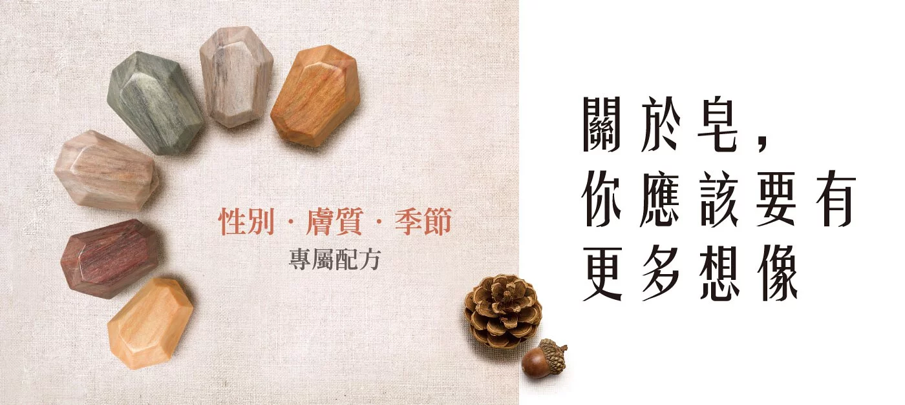

養顏祕寶 皂就美肌力 香皂的至臻進化 在潔顏、淨膚的產品中，肥皂可謂為擁有最悠久歷史的元老。但隨著科技發展，洗面乳、凝露、慕斯等後繼產品，也曾一 度模糊它的面貌。然而，時至今日，滑石粉、塑膠微粒等化學物質，也暴露出它們對人類與環境的傷害，使人們返樸歸 真、回顧自然的益處。成份天然、單純的香皂，也再度引領風潮，復寵於潔顏用品的行列。而台灣南僑集 65 餘年工藝技 術，傾力成就「女性幻顏精華皂」，更為不同膚質打造專屬配方，成為皂中至臻的頂級「養顏皂」。

牛樟芝有「台灣紅寶石」之稱，我們精挑細選尋找牛樟芝精華
不僅是想要讓它更容易滋養眾人，更希望這項得天獨厚的自然活力秘方